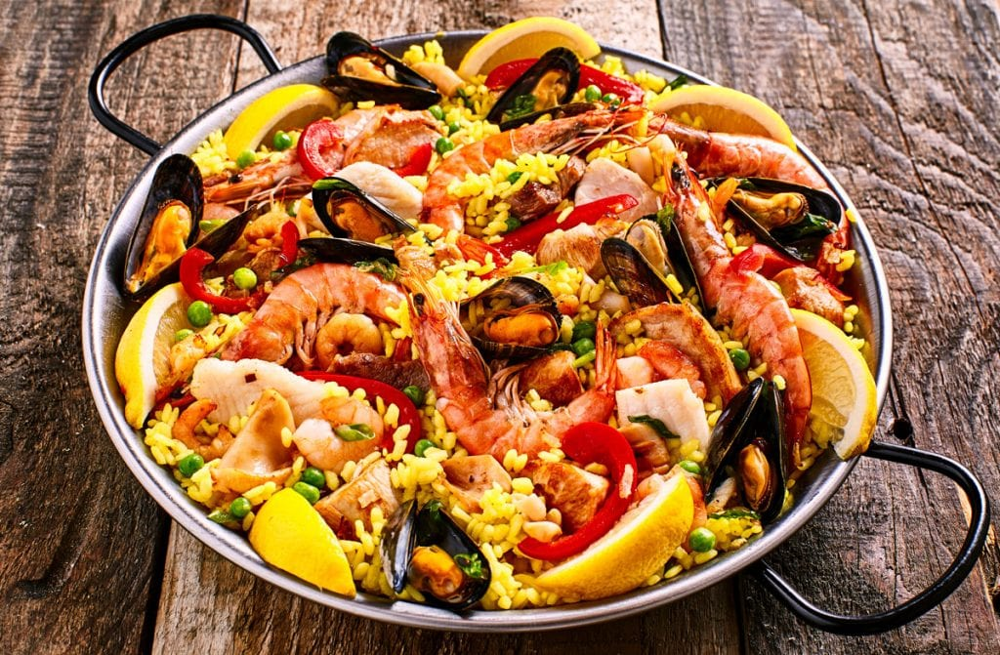

Paella

A Love Letter to Paella
¡Amigos! Gather close and let me tell you about paella — not just a dish, but a celebration of Spanish life itself! This is the kind of meal that invites laughter, long conversations, and second helpings. It is vibrant, bold, and unapologetically communal. When you cook paella, you're not just feeding bellies — you're creating memories. From the golden hue of saffron-kissed rice to the medley of meats, seafood, and vegetables, every spoonful is a burst of flavor and warmth. You don't eat paella — you experience it.
But where does this glorious creation come from? Let me take you back to the Valencian countryside, in the eastern lands of Spain. There, in the wide rice fields and humble farmsteads, paella was born among laborers who cooked lunch over an open fire in the fields, using whatever they had: rabbit, snails, green beans. Later, near the coast, fishermen added shrimp, mussels, and squid. It evolved — like all beautiful things do — shaped by the hands and hearts of the people. What began as peasant food is now a symbol of Spanish pride, a dish served in festivals, weddings, and lazy Sunday lunches alike. ¡Y con razón!
Ingredients
- 2 tablespoons olive oil
- 1 onion, finely chopped
- 3 cloves garlic, minced
- 1 bell pepper, sliced (red or yellow, for the drama!)
- 2 tomatoes, grated or finely chopped
- 1 cup short-grain rice (like Bomba or Arborio)
- 2 cups chicken broth (or fish broth for seafood variation)
- A generous pinch of saffron threads
- 1 teaspoon smoked paprika (pimentón, por favor)
- 150g chicken thighs, boneless and chopped
- 100g chorizo, sliced
- 150g shrimp, peeled and deveined
- 100g mussels, scrubbed and de-bearded
- ½ cup frozen peas
- Salt and pepper to taste
- Lemon wedges, for serving
- Fresh parsley, chopped (because a touch of green is life)
Steps
- Heat the olive oil in a large paella pan over medium heat.
- Sauté the onion and garlic until translucent and fragrant — don’t rush this, it’s the soul of the dish!
- Add the bell pepper and stir until softened.
- Stir in the tomatoes and cook down into a thick, rich base — this is your sofrito.
- Add the chicken and chorizo, browning them on all sides. Let them bathe in those flavors.
- Sprinkle in the smoked paprika and saffron; stir well to perfume the entire pan.
- Pour in the rice, coating it in all that savory goodness.
- Add the broth — but no stirring after this! Let the rice cook undisturbed, absorbing all the liquid.
- Arrange the shrimp and mussels on top. Cover loosely with foil and cook until the seafood is just done and the mussels have opened.
- Toss in the peas for the final few minutes of cooking.
- Once the rice is cooked and the bottom forms a golden crust (socarrat!), remove from heat.
- Rest for 5 minutes. Garnish with parsley and serve with lemon wedges.
Home